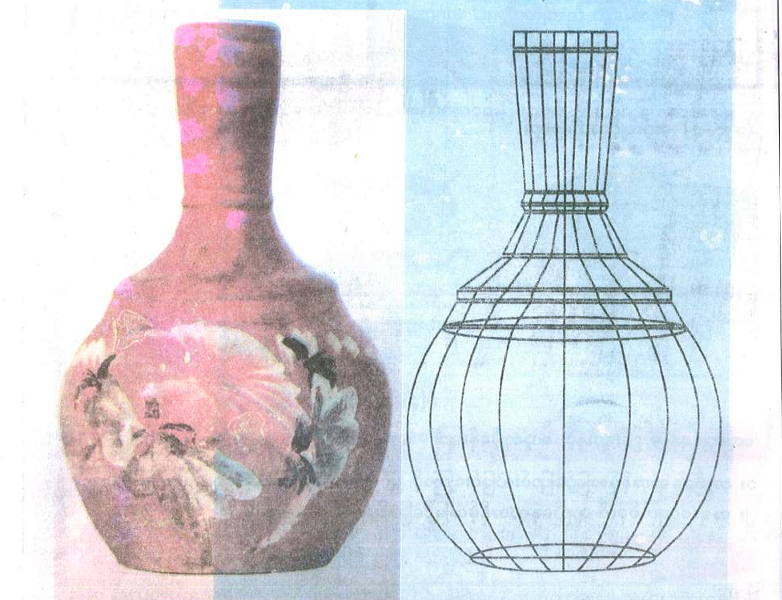

← သင်ခန်းစာများသို့ ပြန်သွားရန်
သင်ခန်းစာ
မြေပြင်ဖြစ်စဉ်များ
အရာဝတ္ထု၏ဘေးအနားသတ်ပုံပေါ်အောင်ရေးဆွဲပြီးနောက်အရာဝတ္ထု၏ထုထည်ခုံးခွက်ပေါ်မူတည်ပြီးအလျားလိုက်သို့မဟုတ်ဒေါင်လိုက်မျက်နှာပြင်နိမ့်မြင့်ပြမျဥ်းများရေးဆွဲရသည်။

မှတ်သားရန်
သဘာဝဖြစ်စဉ်များသည် ကမ္ဘာ့မြေပြင်ကို အချိန်ကြာလာသည်နှင့်အမျှ ပြောင်းလဲစေသည်။
လေ့ကျင့်ခန်း
မျက်နှာပြင်များကိုလေ့လာရေးဆွဲခြင်း
မေးခွန်းတစ်ခုစီအတွက် အဖြေမှန်တစ်ခုကို ရွေးပါ။